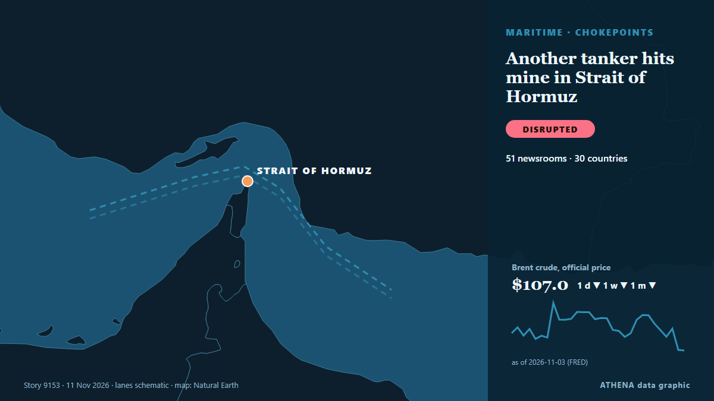

ATHENA Glaux Intelligence — Veille mondiale de l'information — chaque chiffre expliqué
Chaque titre, vérifié dans plusieurs pays.
ATHENA Glaux suit 631 médias dans le monde. Une information devient un événement vérifié seulement lorsque des médias indépendants la rapportent. Chaque événement indique qui l'a publiée en premier et un score de risque avec ses raisons.
Des articles arrivent de médias indépendants : quand deux se rejoignent sur la même histoire, un événement vérifié naît.
Trois façons de lire aujourd'hui
Commencez par celle qui convient à votre tempsÉvénements vérifiés
Classés selon l'ampleur de la couverture
- Eisenkot Warns Netanyahu Against New Iran Strikes Before Israel Forms Government159 médias · 56 paysRisque 4.7
- Trump says Gulf allies urged restraint on Iran, admits war hurt Republicans in midterms106 médias · 44 paysRisque 6.7
- US envoys meet with Putin in the Kremlin after Ukraine talks in Abu Dhabi58 médias · 28 paysRisque 5.6
- US Offers Up to $20 Million Reward for Information on Iran’s Nuclear Program39 médias · 26 paysRisque 5.3
- Mississippi elects Democrat Scott Colom as first black senator since 19th century45 médias · 25 paysRisque 4.3
Bureau d'analyse
Posez une question et lisez une évaluation argumentée d'un sujet majeur, avec ce qui la démentirait.
Ouvrir le Bureau d'analyse ›Comment ATHENA vérifie une information
- CollecterLes reportages arrivent de médias indépendants dans de nombreux pays.
- CroiserQuand deux médias se rejoignent sur la même information, elle devient un événement vérifié.
- ExpliquerChaque événement montre qui était le premier, jusqu'où il s'est propagé et pourquoi le risque est ce qu'il est.

Commerce et industrieAnother tanker hits mine in Strait of Hormuz
Coalition says it destroyed two ballistic missile launchers The Coalition has released footage it says shows the targeting and destruction of two ballistic missile launch platforms. de Gulf News
Les titres sont affichés en anglais, tels que publiés.
Iran’s Revolutionary Guard says 2 oil tankers exploded in Strait of Hormuz
"One of the vessels is a supertanker; it is currently engulfed in flames following a powerful explosion," the Iranian Revolutionary Guard Corps (IRGC) Navy spokesperson said. de The Jerusalem Post
Russian ambassador to US Alexander Darchiev dies suddenly at 66
The announcement called Darchiev ‘an outstanding diplomat, an experienced leader, a kind friend, and a mentor’ de The Independent

Israeli strike on Gaza hospital kills six, including surgeon, medics say
By Nidal al-Mughrabi CAIRO, Nov 12 (Reuters) - An Israeli airstrike on southern Gaza's main hospital overnight killed at least six Palestinians including a surgeon and a teenage boy, medics said, the… de Al-Monitor
Eisenkot Warns Netanyahu Against New Iran Strikes Before Israel Forms Government
Israelis head to the polls on October 27 in a vote that will cast Prime Minister Benjamin Netanyahu and his right-wing and religious allies against a motley crew of opposition parties. de Responsible Statecraft
Trump says Gulf allies urged restraint on Iran, admits war hurt Republicans in midterms
With the political constraints imposed by the US midterm elections lifted, Donald Trump may become more erratic and unpredictable. de The Scotsman
Géopolitique, politique et sécurité
Plus ›With US midterms underway, courts rebuff Trump's pressure on state election officials
Federal judges have repeatedly rejected the Trump administration's efforts to wrest control over state voting processes and intimidate state and local elections officials. de Los Angeles Times (World)
- Guerres et conflits
Hegseth pins medal on soldier who reprimanded his group for laughing at Tomb of the Unknown Soldier
- Diplomatie et sommets
Zelensky: Ukraine New 'Systematic' Restrictions to Starshield
- Guerres et conflits
Russian military officer killed in car explosion in St. Petersburg
- Diplomatie et sommets
President Ilham Aliyev attended opening plenary session of the 9th European Political Community Summit - UPDATED
Économie, finance et marchés
Plus ›- Inflation et taux d'intérêt
Brazil Interest Rate Cuts Stall on US Yields
- Logement et immobilier
US existing home sales fall to lowest level since 2010
- Banques et crédit
Israeli army, illegal settlers carry out over 1,180 arson attacks in occupied West Bank
- Crypto et actifs numériques
Binance says all asset losses from N. Korea-linked cyberattack covered
Commerce, industrie et infrastructures
Plus ›Vietnam Morning Monitor: France seeks to expand helicopter, frigate building cooperation, US looks to boost chicken exports to Vietnam
Black Friday shopping starts three weeks early in Ho Chi Minh City. de Tuoi Tre News
- Construction et infrastructures
Data centre boom prompts new safeguards as Malaysia targets 2027 for regulatory bill
- Transport maritime et ports
Four tankers struck by explosions in Hormuz: Iran
- Aérien, rail et route
United Airlines Blocks A.I. Agents From Booking Flights
- Aérien, rail et route
Turkish Aerobatic Team Flies Over Occupied Kyrenia Ahead of November 15
Énergie, ressources et environnement
Plus ›The planet ‘is being killed’, Greta Thunberg tells Cop31 climate summit
Swedish activist criticised world governments for their failure to prevent environmental breakdown The planet is “not dying, it is being killed and we know by who”, said Greta Thunberg, who… de The Guardian
- Pétrole et gaz
US handled $12 billion of Venezuela’s oil revenues, report says
- Climat et politique climatique
World leaders clash over climate change talks at COP31
- Pétrole et gaz
‘Now or never’ – Argentina targets UK, Malvinas oil project at tribunal
- Pétrole et gaz
MPA opens applications for LNG floating storage unit licences
Technologie, IA et cybersécurité
Plus ›Widespread Microsoft outage takes down Outlook and other 365 services
A Microsoft outage on Thursday affected users of services like Outlook, Teams and 365. de CNBC World
- Puces et calcul
Nvidia Can Replace Its CEO. It Cannot Replace Jensen Huang’s Vision
- Puces et calcul
Nvidia CEO Jensen Huang resigns in big blow to AI boom
- Puces et calcul
Megaspeed's links to rural Australian store raise fresh questions in Nvidia scandal
- Logiciels et cloud
Australia's cybersecurity chief investigating Microsoft outage
Entreprises et investissement
Plus ›Ex-NVIDIA CEO Jensen Huang is set to testify before Congress this month
House Foreign Affairs Chair Brian Mast said a hearing with Jensen Huang will take place before Thanksgiving. de Engadget
- Stratégie d'entreprise
Who is Colette Kress, the interim CEO replacing Jensen Huang at Nvidia
- Stratégie d'entreprise
Canadian co signs MoU with Mari Energies
- Investissements
HHLA container handling falls 7.3% in January-September 2026
- Résultats et perspectives
ICTSI net income rises 20% in January-September 2026
Aujourd'hui en chiffres
| 04:00 | 398 |
|---|---|
| 05:00 | 502 |
| 06:00 | 635 |
| 07:00 | 537 |
| 08:00 | 678 |
| 09:00 | 876 |
| 10:00 | 497 |
| 11:00 | 392 |
| 12:00 | 306 |
| 13:00 | 573 |
| 14:00 | 579 |
| 15:00 | 550 |
| 16:00 | 790 |
| 17:00 | 593 |
| 18:00 | 678 |
| 19:00 | 572 |
| 20:00 | 682 |
| 21:00 | 639 |
| 22:00 | 403 |
| 23:00 | 345 |
| 00:00 | 267 |
| 01:00 | 271 |
| 02:00 | 439 |
| 03:00 | 403 |
Risque des événements du jour
Les plus couverts
Signaux émergents
- Hausse soudaine · ActifMicrosoft
- Hausse soudaine · ActifVladimir Putin
- Nouveau nom dans l'actualité · ActifColette Kress
- Hausse soudaine · ActifEuropean Political Community
- Hausse soudaine · ActifOutlook
ATHENA sur Telegram
Rejoignez gratuitement le groupe ATHENA Glaux et recevez l'actualité dès sa publication ici :
- les événements urgents de risque 6 ou plus
- un point horaire des principaux événements
- les mises à jour des suivis de risque
- le briefing quotidien chaque matin à 10 h (heure d'Athènes)
- une perspective hebdomadaire
- avertissements officiels, signaux émergents et risques en hausse
Touchez le bouton, Telegram s'ouvre, appuyez sur Rejoindre. Les messages sont en anglais ; vous pouvez couper le son ou partir à tout moment. Pas encore Telegram ? Gratuit sur telegram.org.
Suivi des risques
Plus ›Risques mondiaux — semaine 46, 2026 (9–15 nov.) ›